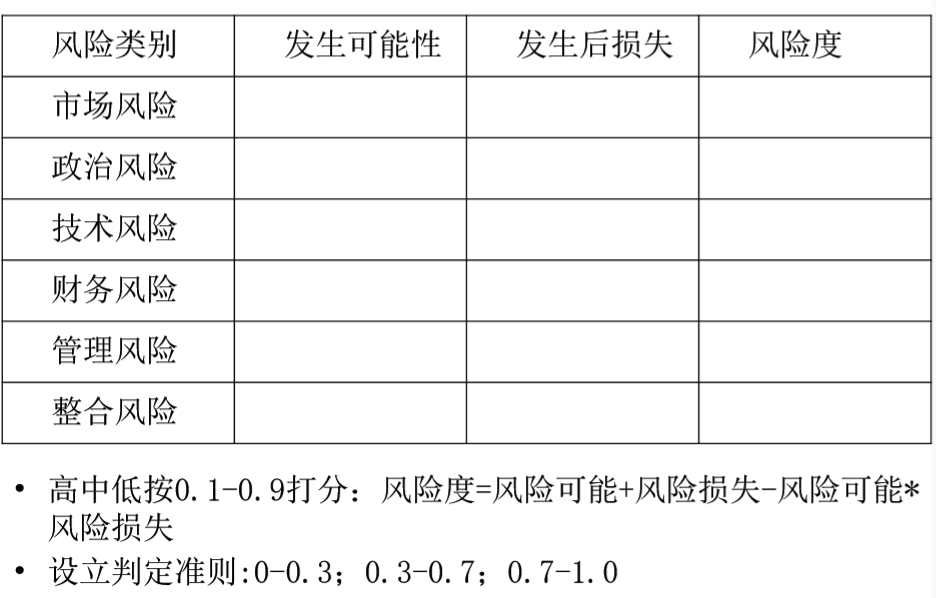

项目管理
授课人：周教授
华中科技大学管理学院
教材及参考资料
杰弗里·K·宾图等，项目管理（第3版）
参考书：
- 哈罗德·科兹纳，项目管理：计划、进度和控制的系 统方法（第11版）
- 詹姆斯·克莱门斯等，成功的项目管理（第5版）
项目管理概述项目项目化管理如何提出一个项目预测现金流累计现金流项目寿命周期——CDEF 如何管理好项目项目启动项目选择确定型决策模型风险型决策模型不确定型决策模型案例：购房问题层次分析法AHP产品/市场开发项目战略组合管理产品/市场开发-战略组合管理 可行性研究商业计划书（面向投资者的“可研”）招标投标概述 投标策略提交能获胜的申请书项目经理与项目组织项目经理项目经理和职能经理的区别项目组织项目范围管理概述编制范围说明书 工作分解结构WBS引起项目问题的因素促进用户参与的建议减少不完整和易变要求的建议范围核实项目变更管理门径管理系统(Stage-Gate System,SGS)项目计划管理概述计划常见错误典型的三层项目计划项目章程项目进度计划单代号网络图双代号网络图网络时间的类型图示评审技术简介项目风险与冲突管理项目风险管理典型的风险风险管理方法风险清单项目冲突管理项目资源与成本管理资源种类计划优化方法时间优化 时间+费用的优化资源有限工期最短工期固定,资源均衡复杂的项目——资源获取项目控制偏差分析挣值管理EVM（Earned value management）设计监测系统趋势预测变革项目 Kotter的8步变革计划
概述
xxxxxxxxxx- 什么是项目？- 如何提出一个项目？- 怎么管理好一个项目？项目
- 工作：日常型与项目型
- 项目：为完成某一独特任务所做的一次性努力
xxxxxxxxxx区别：独特、时限、开放、先有顾客
项目化管理
- 日常型管理：按既定流程，解决所有问题，包括新的问题
- 项目化管理：为达成目标，确定达成方法，获取所需资源，再进行计划、 组织和控制的过程
xxxxxxxxxx所有的管理：解决问题、执行任务**每解决一个新的问题，每执行一个新的任务，都要当作一个项目来管理，都 应该采取项目化的管理思路!**管理：解决问题、执行任务
解决问题
- 常规问题——日常型管理
- 突发问题——项目型管理
完成任务
如何提出一个项目
项目提出：项目三约束——时间、预算、绩效（质量）
项目成功标准：时间、成本、范围（质量）的计划与结果比较
项目成功标准：还取决于项目干系人【1】
颠覆性技术：—累计现金流:繁荣而死的小黄车OFO
预测现金流
自由现金流FCF:企业消耗或收入的现金数量：
FCF = EBIAT-NOA增加
EBIAT:息前税后毛利；
NOA:净经营资产 = 经营资产-经营负债
经营资产包括：现金、应收、存货、预付、递延等；
经营负债包括：应付应计费用、经营负债如养老金等。
FCF预测：销售增长、维持增长所需的资产数量增长、 盈利能力增长。
累计现金流
烧钱率：消耗现金的速度，以每月/每年所消耗的金额来度量。如果是递减的 并转负为正，则有很好的成长性。
现金需求：所需的现金总额。分阶段筹集—多轮风投。
累积现金流转正点：时间点的确定度？如果延后一年？
冒烟日：公司用完资金的时间点。
- 如果销售增长为零且资产强度（NOA /销售额）不变， FCF=EBIAT。资产强度不变，而增长率降低时，EBIAT>=FCF
- 当公司无法以合理的价格筹集资金时，降低增长率，可能通过 释放现金来增加公司对当前所有者的价值。
- 当外部资本昂贵时，公司应在盈利能力和资产强度之间做出明 智的权衡。公司通常通过特许经营来接受每家商店的低利润， 通过降低资产强度来增加价值。
- 三个杠杆（资产强度，增长和盈利能力）相互影响。例如，提 高盈利能力的行动可能会影响增长（如提高价格），而降低资 产强度的行动会影响盈利能力（如为客户提供更快的支付折扣 ）或增长（如为客户提供吸引力小的支付条款可能导致降低增 长率）。
一些规律：
- 在引入颠覆性技术时，公司通常面临着多种项目模式的选择。
- 不同模式具有不同的现金流，对应不同的融资金额和结构，对 公司的控制等具有深远影响，这对创业公司极其重要。
- 盈利能力和现金流量是相关的，但有利可图的公司可能破产， 而无利可图的公司由于现金流管理得好也可能长存。
- 高增长并不总是创造价值的最佳方法，慢增长也能增加价值， 增长太快反而会摧毁价值。如果公司实现高增长且利润率很高 ，也可能由于现金流管理不善，而被淘汰——“繁荣而死” 。
- 创业者和投资者之间存在着不可避免的紧张关系，双方利益看 起来是相似的，其实在很多方面是不同、甚至是对立的。
项目寿命周期——CDEF
- 概念阶段CONCEPT——项目启动（分析论证）
- 发展阶段DEVELOPMENT——计划
- 实施阶段EXECUTE——控制
- 结束阶段FINISH——移交、售后与总结评价
如何管理好项目
- 项目型管理思路：为达成目标，确定达成方法，获取所 需资源，再进行计划、组织和控制的过程。
- 项目周期——CDEF——豆腐渣工程与七无工程
- 项目管理的主要内容——PMBOK
PMBOK的十大范畴
项目启动
xxxxxxxxxx- 项目选择- 可行性研究- 招标投标项目选择
资料收集
项目选择的方法：
专家判断：
- 组织的其他部门
- 咨询顾问
- 职业或技术协会
- 行业协会
效益度量方法
定量数学模型：利润/盈利能力
- 确定型 风险型 不确定型
定性数学模型：评分AHP模型
确定型决策模型
投资回收期
平均回报率
现金流量折现
内部收益率IRR
风险型决策模型
- Pj是指第j种自然状况发生的概率；Bij指第i个方案在自然状况j下的损益值
- 决策表方法
- 决策树方法
不确定型决策模型
xxxxxxxxxx悲观原则 乐观原则 乐观系数原则 等概率原则 最小后悔值原则
案例：购房问题
层次分析法AHP
- 定义问题，确定目标
- 从最高层(目标层)，通过中间层(准则层)到最低层(方案层)构成一个层次结构模型
- 两两比较打分，确定下层对上层的分数
- 层次合成计算
- 一致性检验
产品/市场开发项目战略组合管理
惠普的项目气泡图
产品/市场开发-战略组合管理
- 成立决策委员会：总裁、CFO、其它各部门经理、可能持反对 意见的人
- 判别新产品/市场类别:派生型、平台型和突破型
- 收集各类新产品/市场信息
- 评估资源的可获得性，分配资源到类，预留10-15%（新的机会 、项目危机、预测不准等）
- 优化项目和标准：是否具备能力、有无市场、财务回报 (NPV\IRR\回收期等）、风险、资源的配合、企业的优势发挥或 劣势、与组织战略的一致性、成功概率、突破固有产品/市场的 能力、新型市场的吸引力、客户满意度的影响、对员工发展的 贡献、资源的获取、新知识新技术的获取
- 同一类别中排列项目的优先性
- 分配资源、选择项目并预留资源
- 落实新产品/市场开发项目
可行性研究
- 在投资决策之前，对拟建项目，进行技术上的先进性和 适用性、经济上的盈利性和合理性、社会效益的可能性 进行分析与论证，对其作出可行与不可行评价的一种科 学方法。
- 作用：投资决策的依据；项目设计和实施的依据；项目 评估的依据；作为签订其它有关合同、协议的依据。
- 阶段：机会研究、初步可行性、详细可行性。
内容包含：
一、项目概况 二、市场预测 三、资源条件评价
四、建设规模 五、厂址选择 六、技术方案、设备方案
七、主要原材料 八、总平面布置图 九、投资估算
十、融资方案 十一、风险分析
商业计划书（面向投资者的“可研”）
1.公司概述 2.研究与开发 3.产品或服务 4.管理团队和组织结构
5.行业及市场 6.营销策略 7.融资说明 8.财务计划与分析
9.风险因素 10.退出机制
招标投标概述
- 概念：招标投标是一种因需求方的要约，引起承约商 的承诺，经过需求方的选择，形成合同关系的双方平等 主体之间的经济活动。
- 特征：平等性、竞争性（三家以上）、开放性
- 方式：公开招标、邀请（选择）招标、两段招标（先 邀请再选择）、协商招标
投标策略
是否投标的决策
信息的收集与分析
- 业主信息的收集：项目招标文件；业主对承包商的要求；业主的项目目 标、评价标准；业主的资金保证程度、经济实力；现场调查资料。
- 市场信息：竞争对手、相关部门（设计供应等）。
- 企业内部情况分析：优势与劣势，通过与竞争对手相比较来发现 差距，确定这次投标的中标可能性。
- 有关技术情报：有关技术标准、规范、新材料新技术新工艺信息。
申请书
提交能获胜的申请书
申请过程是竞争过程、申请书是推销书，不是技 术报告
最使客户满意—研究客户需要—层次结构模型
申请书的要求
- 简明扼要：避免术语、缩写、行话、复杂图示
- 明确具体：避免最大限度地、最好地等
- 实事求是：避免过于乐观
申请书的准备：一个人—一组人—项目经理+外 包，30天准备期，之前开始准备，费用自负
申请书的内容
技术部分
管理部分
成本部分
xxxxxxxxxx- 定价使客户确信所提价格 是现实和合理的。- 劳动力、原材料：分包商和顾问、设备和设施租金、 差旅费、文件、管理费（以上六项的百分比，含保险折 旧结帐管理营销等）、物价上涨、意外开支、利润1. 固定总价合同：固定总价；调值总价；固定工程量总价；管 理费总价2. 成本补偿合同：固定费用；定比费用；浮动酬金；奖惩；3. 单价合同（分包）
项目经理与项目组织
xxxxxxxxxx- 项目经理- 项目经理和职能经理的区别- 项目组织项目经理
项目经理的职责
对整个项目进行计划、组织、控制、指挥和协调
- 对母公司:完成项目目标即企业目标、充分利用资源、对上级 的沟通—项目的现状、成本、时间安排、前景
- 对项目和客户:全权负责项目的完成、解决各方冲突、维护项 目的整体性
- 对项目团队：创造工作环境和氛围、绩效考评、成员发展特 别是接近尾声。
项目经理的权力
挑选项目成员 项目相关决策 分配项目资源
项目经理的能力要求
技术能力、沟通能力、授权能力、应变能力、领导能力
xxxxxxxxxx应变能力不确定性带来危机与冲突，变化可能是：由客户、团队成员、不可预知事件 - 创造环境、职工参与、减少冲突 - 广泛沟通、增进理解、避免冲突 - 充分认识、及早发现和预知变化、高层支持 - 建立变化的记录和批准程序、应有一个成员负责业主变化的评估（进度和成本）、建立信息系统和应急计划项目经理的平衡工作要求70%的精力放在沟通上： 三约束、干系人、管理与技术
xxxxxxxxxx由技术转向管理的障碍：项目经理认为自己会做得更好要亲历亲为成员怕犯错误或缺乏信心不太信任他人的能力、害怕失去控制
项目经理和职能经理的区别
项目组织
职能型组织结构（所管辖的部门应该对项目最有帮助）
优点
- 人员使用的灵活性与专家的共用性、交流与支持
- 连续性（人员离开、人员的晋升）
缺点
- 职能部门关心的是日常工作而不是客户。层次多、响应慢；人员积极性不高，部门是其主要工作。
- 责任不明确、整体管理困难，特别是跨部门的复杂项目
项目型组织结构（独立单元，有自己的技术人员和管理人员）

优点
- 项目经理全力投入、全权负责，成员对其负责、权力集中、命令统一、对顾客的响应速度快
- 工作专注、效率高,如沟通效率高,直接对上层
缺点
- 机构重复设置、资源浪费
- 项目经理对专业人员的超需储备
- 不利于专业领域的协商交流
- 对成员缺乏连续性和保障
矩阵型组织结构
优点
- 项目是工作的焦点，对客户响应快
- 人员共享、人员的持续性与归属
- 可以在公司的多个项目上进行平衡
缺点
- 项目经理与职能经理的权力平衡带来责任问题
- 公司在不同项目上的资源平衡困难，项目经理之间的斗争
- 工作的划分困难、对项目经理协调能力要求高
- 命令不统一
xxxxxxxxxx一般程序：通过对项目目标的描述来定义项目范围；对关键任务进行排序，并进行工作组合；确定工作执行部门以及协助部门；结合以上各项，通过掌握各种组织形式的特点，最 终选择一种。
项目范围管理
xxxxxxxxxx- 概述- 范围与定义- WBS- 范围核实与控制概述
项目范围：定义项目边界
为了实现项目目标所必 须完成的全部且最少的工作。——动态变化的
- 产品范围—最终提供的产品（项目结束时所呈现的状态）；
- 产品规范—这个产品所包含的特征和功能；
- 工作范围—完成具有这些规范的产品，要做哪些工作？
范围管理基本法： 合同范围<实际完成的范围<顾客期望的范围
对项目范围进行动态地计划、组织和控制的过程，用以保证项目包含而且只包含所需要的 工作，以顺利完成项目的过程。
编制范围说明书
详细描述项目的可交付成果和为完成 这些可交付成果所做工作的文件。
作用：
- 让干系人就项目范围达成一致理解；
- 描述项目的主要可交付成果，使项目团 队能够做出更详细的项目计划；
- 为项目范围控制提供基准。
》》》OFO自行车密码锁开发项目范围说明书《《《
工作分解结构WBS
WBS以可交付成果为对象,对项目细分之后得到一种层次结构，以便定义、管理和控制。
- 项目群（或大项目）：开发一款新轿车 ，是大项目，包含发动机开发、车身开发、底盘开发等若干个项目。
- 项目（子项目）：如发动机设计，有专门的项目经理与项目小组，还可外包。
- 任务：设计发动机必须要设计缸体、缸盖、润滑系统、冷却系统等。
- 活动：设计发动机缸体，包括设计外形尺寸、内部结构等活动。
- 工作包：设计发动机缸体的外形尺寸， 需要借助CAD来确定尺寸，并完整绘图 。
分解方法：类比法；由上到下的方法；由下到上的方法
分析与WBS词典（WBSD，dictionary）：
- 低层次的要素对于被分解要素的完成是充分必要的吗
- 每个组成要素能否清楚、完全地定义?
- 对每一构成要互是否做了预算及时间安排？是否分配了相应 的部门或人员?
WBS的形式
| 树状图 | 气泡图 | 列表法 | |
|---|---|---|---|
| 优点 | 直观结构清晰 | 添加修改比较容易 | 最常用 |
| 缺点 | 不易修改 | 不直观 | |
| 适用 | 小项目 | 大项目 | 大项目常用 |
引起项目问题的因素
缺少用户的参与
不完整的要求和说明
易变的要求和说明
- 缺乏主管的支持
- 技术不过关
- 缺乏资源
- 不切实际的期望
- 目标不明确
- 不切实际的时间安排
- 新技术的影响
促进用户参与的建议
- 设计好项目选择程序,用户中有项目发起人;
- 让用户参与项目组:如两个项目经理,一个是用户;
- 举行例会与用户定期地互动,在会上让用户签收那些主要的成果;或者定期向用户和发起人送交有关可交付成果;
- 让用户和项目成员一起相处.
减少不完整和易变要求的建议
- 制定并遵循一个确定需求的管理程序，透彻理解用户的需求；
- 对所有的需求都记录在案，并确保这些信息易于流传和获取；
- 制定并运行一个评审程序，从系统观点评审提出的要求变更；
- 建立一个需求管理数据库，用来对需求变动进行记录和管理；
范围核实
阶段结束或整体项目结束，项目干系人对已完成成果进行审查， 审查可交付成果是否符合期望。
在WBS结束时确认：项目范围管理计划、可交付物、项目范围说 明书、WBS和WBSD
注意：
- 如果项目提前终止，这个范围核实过程也应该检查并以 书面的形式把项目的完成情况记录下来
- 范围核实一般是在项目的一个阶段完成并即将进入下一 个阶段之前进行，不能等到项目的最后才进行范围核实工作
项目变更管理
- 制定变更流程，甚至写入合同；
- 成立项目变更委员会：确认项目范围，并讨论决定是否接受范围的变更申请：项目 经理、客户、项目发起人、关键职能部门经理
门径管理系统(Stage-Gate System,SGS)
将新产品开发分为五个阶段。每个阶段由跨部门的人员操作。阶段之间设置关卡，有标准的操作流程。
具体实行：
- 构思阶段： 对每一个项目进行初步调查论证。
- 确定范围：包括产品功能定义、产品开发理由以及产品项目方案。
- 确立公司开发项目：进行市场调查、技术研究和可行性研究。
- 开发： 详细设计，并进行简单的产品测试。 同期亦要设计生产流程与市场方案。
- 测试和验证： 在实验室、生产线以及市场上展开，包括产品、生产流程、顾客态度及经济前景。
- 投产及上市：大规模生产与销售。
- 项目后评价：新产品变成常规产品，项目终止，解散团队，并进行后评估。
关卡：
- 检查项目可交付成果：这些阶段成果必须是看得到的，而且是根据每个关卡的标准，事先决定的。
- 标准：指衡量成果的依据。
- 阶段产出：过关(Go)/淘汰(Kill)/暂缓(Hold)/返工(Recycle) 。对于过关的项目，还要进行优先级评定，以进行资源分配。
项目计划管理
xxxxxxxxxx- 概述- 项目进度计划——网络计划技术 概述
计划
确定组织目标; 确定行动时序; 确定所需资源
“没有好计划，却有好结果，是因为好运气，而非好的管理”——主动与被动
不能给创造设立时间?——可以设立进度表—最大的激励来自于时间底线
常见错误
- 片面计划
- 准备-开火-瞄准
- 太少细节的计划或者大刷子计划
- 太多细节的计划
- 不考虑风险
典型的三层项目计划
高层计划
- 阶段：根据用户需求总体分为哪几个阶段；
- 时间：各个阶段要多长时间完成？或严格要求什么时候完成？
- 资源：按阶段阐明所需资源，包括人力和关键设备
- 完成标准
- 承诺与认可：高层计划要得到客户和高层管理者的认可，并告知有关部门，如人力资源部、财务部门等相关内容。
中层计划（将高层计划分解为每个小组一周的工作 ）
- 任务：项目的每个阶段可以拆分为哪些任务
- 人：每项任务的责任人是谁
- 设备资源：什么时候需要什么样的设备等资源
- 时间：每项任务要求在多长时间内完成？或严格期限
- 任务之间的关系
- 里程碑：关键事件点，如关键人员或关键设备的到位期限、什么时候审核等
- 承诺与认可：与高层计划一致，得到执行者的认可
基层计划（根据中层计划的安排,每个人制定自己的日计划 ）
- 时间：每周周一的早会之间，制定本周或二周内的每天的计划，由具体执 行的每个人来制定，是每天工作会议的依据。
- 内容：每天的任务和需要提交的文档。
- 承诺与认可：要求每个人计划得到所需支持者的认可，每个人的计划 符合中层计划，与其它人的计划进度没有冲突。对于不能拆分到天的任务， 若不在关键路径上，则可以不拆分，由执行者把握进度，否则要按内容划分 为几个部分，或用百分比来划分。
项目章程
制定相应的项目章程，名称、时间、项目经理、目标、方法；角色和其职责。
项目进度计划
确定项目及项目的各项工作的开始和完成时间
画甘特图表示任务的开始和完成日期；
网络计划技术：
- 关键路线法（CPM:Critical Path Method）
- 计划评审技术（PERT, Project Evaluation and Review Technique）
- 图形评审技术（GERT，Graphic)
单代号网络图
节点式网络又称单代号网络(AON: Activity on the node)，活动用方框表示，箭头表示活动间的关系。
双代号网络图
箭头式网络图或双代号网络图（AOA: Activity on the Arrow)，用箭头代表活动
注意：要掌握双代号网络图！
绘图原则：
xxxxxxxxxx- 从左到右，紧前画出之后再紧后活动；- 两相邻节点之间只能有一道活动；- 不能循环；- 箭头序号大于箭尾序号；- 只能有一个起点和一个终点。
网络时间的类型
活动加工时间
节点时间：最早时间、最迟时间
活动时间：活动最早开始、活动最早结束、活动最迟开始、活动最迟结束
机动时间：往后推迟而不影响活动的时间。
- 活动总时差TS（total slack）：不影响工程工期的可推迟的最大时间；
- 活动单时差FS（free slack）：不影响后续活动最早开始时间开工的最大推迟时间。
关键活动、关键节点、关键线路
三点时间法：
网络时间的计算：
节点时间：
- 节点最早时间——从前往后算
- 节点最迟时间——从后往前算
活动时间计算：
- 最早开工时间
- 最晚开工时间
- 最早完工时间
- 最晚完工时间
活动时差：
- 总时差：最晚完工时间-最早开工时间
- 单时差：最早完工时间-最早开工时间
关键线路
图示评审技术简介
- CPM：以时间为主要参数的确定型网络模型；
- PERT：以平均值来表达时间的不确定型网络模型，是对某一活动时间的估计；
- GERT：对不同活动的不确定性和另外一些独特的网络模型。它是多个PERT按其概率搭接而成的，其中每个事件和活动不要求都实现，并且允许有多个起点、终点和回路。
项目风险与冲突管理
xxxxxxxxxx- 项目风险管理 - 项目冲突管理项目风险管理
影响项目目标实现的不确定性:
xxxxxxxxxx- 事件(变化)- 事件发生的概率(不确定性)- 事件的影响(后果)
典型的风险
• 市场风险 • 政治风险 • 技术风险 • 财务风险 • 环境风险
• 管理风险（QCD） • 整合风险（特别是干系人整合）
风险影响矩阵：

风险管理方法
- 风险识别—专家意见
- 风险评估—估计（概率与后果）；评价（风险的经济意义和处理的费用/效益分析）
- 风险处理：控制、自留、转移
- 风险监督：风险发生与风险管理的监督
风险清单
| 风险 | 预防措施 | 备选方案 | 预警指标 |
|---|---|---|---|
- 描述计划的目标和WBS
- 找出问题和机会
- 预防问题和促进机会的措施
- 制定备用方案和预警措施
项目冲突管理
xxxxxxxxxx面对冲突 了解情绪 建立沟通 解决冲突 理解选项 人际影响
沟通的前提：同理心
项目资源与成本管理
xxxxxxxxxx- 无能力约束计划与项目资源- 计划优化方法- 资源获取资源种类
人、设备、材料、资金
可得性:
- 可以持续使用的资源(在项目的各个阶段)
- 消耗性的资源(总体、然后不断消耗)
- 双重限制资源(总体与阶段)如资金
xxxxxxxxxx确定资源应注意的问题- 资源的选择要具有适应性：通用设备和培训- 注意资源的经济规模和学习效用- 资源的边际贡献递减- 整体使用资源- 综合考虑资源的能力：额定能力和有效能力- 考虑项目不同生命周期对资源需求的不同特点
资源安排:
实用法：尽早、尽晚、最短任务优先、最多资源优先、最小松驰量优先、最多关键跟随活动优先、最多后随者优先\随意
优化方法：数学规划、列举法
计划优化方法
时间优化
优化工作组织方式
- 将串联工作调整为平行工作
- 将串联工作调整为搭接工作
- 调整计划机动资源：推迟非关键活动的开始时间；延长非关键活动的持续时间
优化工作的可变顺序
时间+费用的优化
工作的步骤
- 首先求出不同工期下的最低直接费用;
- 然后考虑相应的间接费用的影响;
- 最后再通过迭加求出不同工期的最低工程总成本。
准备工作
- 绘制逻辑关系正确的网络图;
- 对各工作求出正常时间及正常费用，加快时间及加快费用这四个数据;
- 假定各工作的费用变化率是连续的、线性的，即工作时间缩短与费用的增长关系是个常数。
xxxxxxxxxx计算步骤1. 计算网络图中和工作费用率；2. 找出最低费用率的一项关键工作作为缩短时 间的对象；3. 缩短时间：其线路不能变成非关键线路；4. 计算相应增加的费用，计算总费用；5. 重复2-4，直到总费用最低。
资源有限工期最短
绘图： 时间坐标网络图、资源负荷动态曲线.
时间分段与活动排序：
- 根据各活动的结束时间划分时间段；
- 各段内的工作先对关键活动进行编号, 再对非关键线路上的工作编号；
- 对于总时差相同的非关键线路按每天需要资源数量的递减顺序编号;
分配： 按序号从小到大对每天需要资源数量进行累加,资源不 够余下的活动往后推.
后续阶段 [tk,tk+1] 的排序：
- 对不允许内部中断的工作,把已经在加工的工作优先编号，再考虑其它工作;
- 对于允许内部中断的工作, 把它在tk后的部分当作一个独立的工作来处理, 按第2步的原则；
工期固定,资源均衡
- 绘图：时间坐标的网络图、资源负荷动态曲线.
- 调整:按事件最早时间的先后顺序,自右向左进行调整.
- 在所有非关键工作按事件最早时间的先后顺序自右向左调整, 为使方差进一步减少,再同样调整第二次,循环反复,直到所有工作都不能再移。
复杂的项目——资源获取
- 获得上级的支持
- 仅仅得到上级的支持还不够，还要和上级捆绑在一起
- 要和上级捆绑在一起，你必须有足够的支持合作者
- 不能忽略反对者，与他们保持密切联系
项目控制
xxxxxxxxxx- 偏差分析- 监测系统 - 纠偏措施 偏差分析
挣值管理EVM（Earned value management）
累计成本曲线：计划值(PV)；实际成本(AC)；挣值(EV)
- 成本偏差(CV)= EV - AC
- 进度偏差(SV)= EV - PV
- 成本绩效指数(CPI) = EV / AC
- 进度绩效指数(SPI) = EV / PV
完工估算：EAC = BAC (总预算) / CPI
完工工期估计：项目计划工期 / SPI
时间偏差TV = 计划分配给已做工作的时间STWP - 实际所用时间ATWP
时间绩效指数TPI = STWP / ATWP
设计监测系统
确定监测对象：项目中不确定的因素都是跟踪对象，重点在最可能变化又影响大的因素上。项目三约束、里程碑——高层？项目经理？低层管理人员？
实际中普遍存在的问题：
- 跟踪的问题来自于行动计划？如客户对项目工作态度的变化、工作士气都是计划中没有的。
- 重点放在容易收集的数据上或关注客观的数据？--产出的各个方面而不是工作强度或努力程度。
- 以投入的数据代替产出的数据？投入50%代替完成50%
收集方法：观察、测量分析、报告、会议
趋势预测
根据实施与计划的偏差进行趋势预测
CSI范围
变革项目
复杂的任务越来越多，每个复杂的任务，都应该当作变革项目！
人是惯性动物，每个人都生活在一定规律中。习惯给我们带来大量方便，从而提高效率、降低成本等，特别是不用费脑去思考！
工作中的规则如果总变，人会感到非常痛苦，甚至会激烈反抗。
Kurt Lewin计划变革理论:先打破旧的状态，再建立新的状态。
- 解冻：创造变革的动力
- 变革：实施变革
- 再冻结：稳定变革
Kotter的8步变革计划
xxxxxxxxxx解冻：创造动力1. 创造一种紧迫感2. 组建一个强有力的指导联盟3. 创造变革愿景4. 传达这一愿景变革：实施变革5. 授权行动并消除障碍6. 创造短期胜利再冻结：稳定变革 7. 巩固改进并产生更多变化8. 将新方法制度最后：项目资源管理和项目控制有一些计算题，具体见PPT。